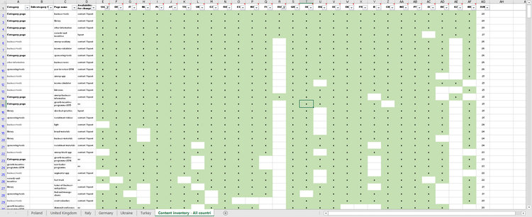
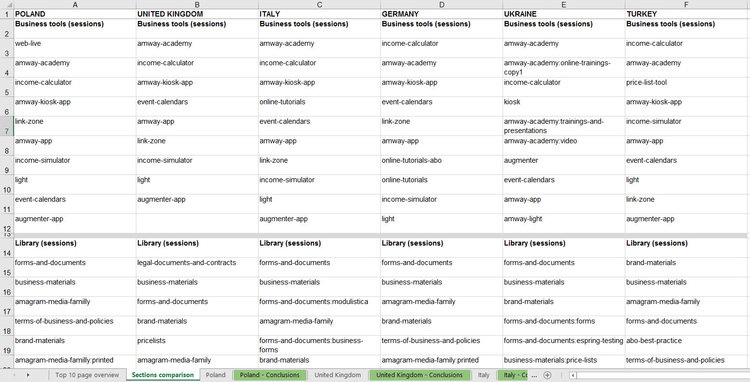
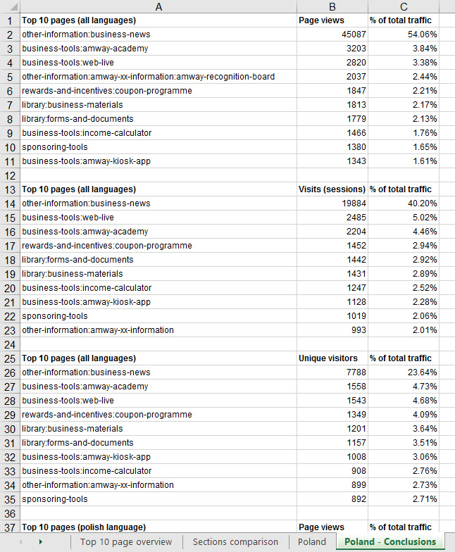
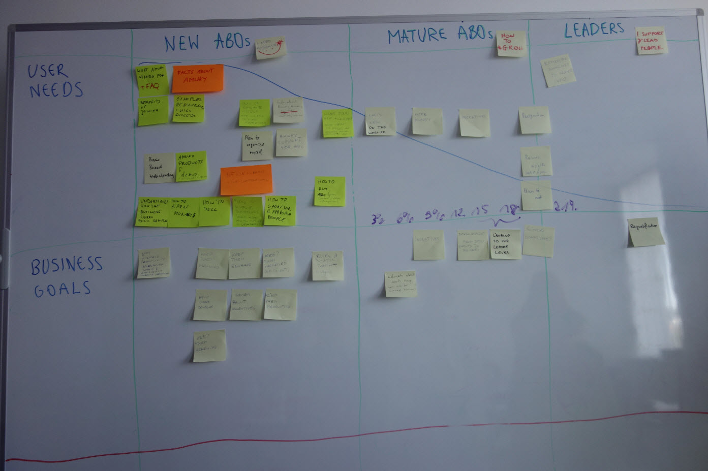
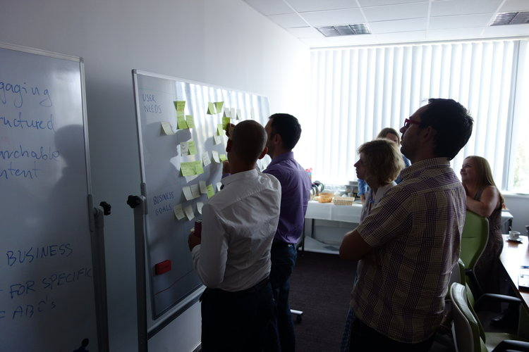
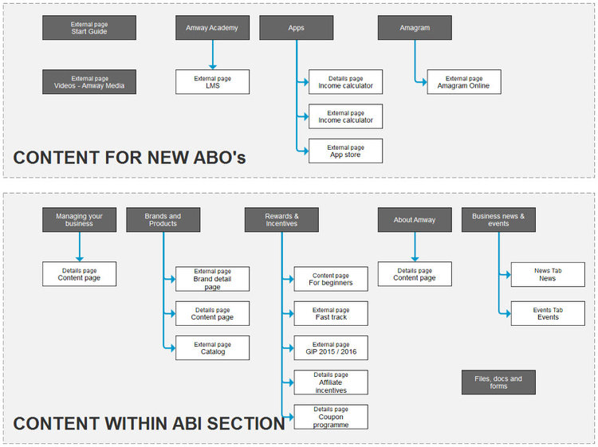
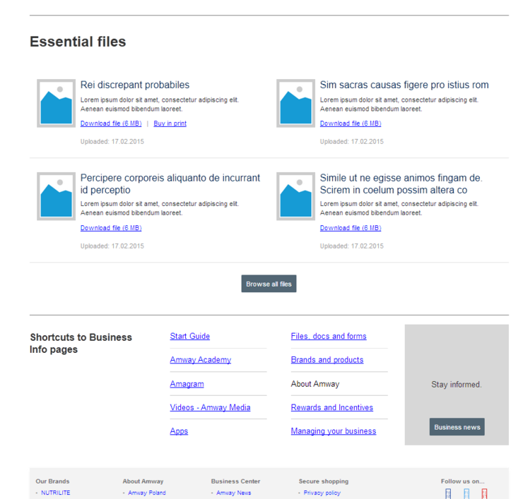

Amway is an American company that uses a multi-level marketing business model to sell a variety of products, primarily in the health, beauty, and home care markets.
Amway Business Information (ABI) is a section of Amway e-commerce website, available for registered Business Owners. It contains forms, tools, help and other necessary information which helps Business Owners run their businesses.
In most countries, this section contained over 160 pages. The content was unstructured, the forms and tools very difficult to find. The cost of maintaining them was enormous. Each week Amway received thousands of requests to help find a piece of information.
Prepared a project brief, which amongst other topics contained; clear problem statement, KPI’s, goals and expectations and deliverables.
For various reasons, we were not allowed to speak directly with the users. I decided to use data (Adobe SiteCatalyst), surveys and testing with colleagues, friends and family.
I organized a series of workshops; strategy and opportunity, feature ideation, content definition, structure and layout, evolution and improvements.
I organized a workshop with developers to introduce them to the project. During the workshop, I presented a few concepts of features to verify their feasibility.
Based on previous activities I prepared a document containing a proposal for new site map, labeling, page structure and information density.
During the project, I was sketching ideas for page layouts and widgets. I started with some general low fidelity mockups and once I got an agreement from the business and devs I prepared high fidelity prototype for testing.
Since I couldn’t validate the project with the actual users, I decided to invite co-workers, random people from the street and friends and family. After a few iterations and improvements, we built and delivered a final product.
Business Information section of Amway website (available only for registered Customers) was largely a collection of random pages put together without any structure or logic. Number of countries using this section to stay informed in the business added even more complexity to it. So in order to understand the content and how people are interacting with it I started with Content Inventory matrix.
Once I got an idea on the scope and reach of the content I started putting together various sets of data to see if there are any interesting patterns or similarities across countries
 The only interaction with the Users I was allowed to have was a survey, which I used to the full extent. I prepared a few questions which was sent out to 6 main regions in Europe. We managed to collect more than 3500 responses. Large majority of answers were very valuable and provided a User perspective on the usage and problems of ABI section.
Example of an answer from the survey.
One of many tools we were using during the workshop was a User needs vs. Business Goals vs. ABO maturity matrix. It helped the business understand what should they focus on when working communicating with their Customers.
New site structure was heavily influenced by the relevancy of the content for each of the customer groups.
Working on a new content structure
User needs vs. Business Goals vs. ABO Experience
After we've defined content expectations I started working on a new site structure. This involved taking each content piece and trying to understand its context and relevancy. I used flip-chart paper and colored post-it notes.
Post-it notes and flip charts translated into the structure diagram.
Once the majority of prep work was completed. I began working on low fidelity concepts to illustrate content distribution and density.
After a couple of iterations I sign-off from the business and development team, I began working on hi-fidelity wireframes.
I presented conclusions from data analysis and user surveys which suggested several areas of improvement. The initial resistance to change was a result of mistrust of UX methods. Once the stakeholders saw I based my work on real data, they approved the changes.
Each week during the design execution I was presenting wireframes to the developers to discuss possible solutions and workarounds.
Before the UI team started working on the visual side of the project, I needed to test some of the assumptions about design choices.
Based on available data I knew that Users were following a certain path in their journey through ABI. Though I wasn't sure if the path would stay the same with the new structure. In order to measure the amount of steps people take to accomplish certain tasks I had to set some benchmarks. For that purpose I've setup two tests. First with the old and second with the the new structure.
I couldn't speak directly with the Users so I asked my friends and family for help.
I gave the participants the following tasks:
During the test I was observing and recording all interactions and paths participants were taking to accomplish the tasks. I also asked them to comment out loud on anything they were doing while performing the task.
The results were promising.
One of the new features which we introduced after a testing session was an additional navigation at the bottom of each page. The users were following a certain path and having it at the bottom allowed them to go through the journey much more smoothly.
After deployment to production we were measuring performance of various KPIs.
The number of calls related to ABI section (Helping to find a document, getting information about a product, etc).
Comparison of three most commonly downloaded types documents.
Average time spent browsing ABI pages